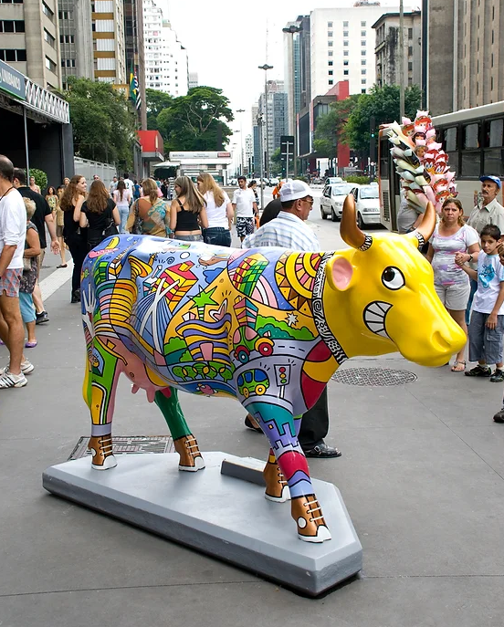

Obras
Assim como diversas coisas no mundo, as vacas também tem obras feitas pra elas, aqui estarei citando duas:
Estátuas
- A CowParade, maior evento de arte a céu aberto do mundo, tem como propósito democratizar a arte através da inclusão cultural. Artistas selecionados usam uma escultura de vaca, em fibra de vidro e em tamanho natural, como suporte. Suas obras são espalhadas pelas cidades, transformando ruas e praças em espaço de exposição acessível a todos.
Filmes
- Este é um filme de animação lançado em agosto de 2006 dirigido pelo Steve Oedekerk.
- Sinopse: O touro Otis gosta de cantar e tocar como todos os outros animais do celeiro quando o agricultor está fora. No entanto, o bovino despreocupado deve encontrar coragem para ser um líder quando, inesperadamente, ele se encontra em uma posição de grande responsabilidade.
- OBS: Tecnicamente o protagonista seria um touro, porém por não possuir chifres e possuir tetas, estarei considerando uma vaca.
Esta é a estátua de uma vaca sorrindo feita pela CowParede:
